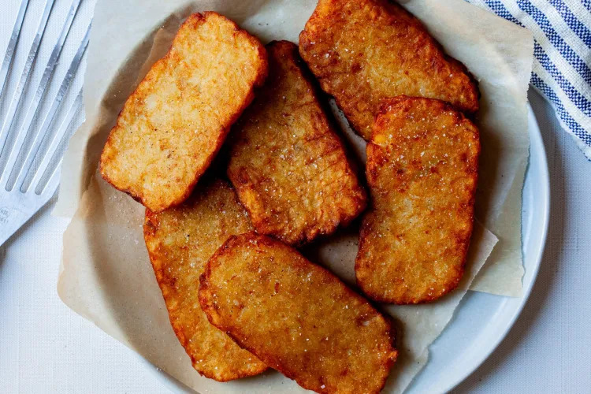

Home
Hash Browns

Image from Smittenkitchen
Hash Browns are a popular breakfast dish in America.
It is made of finely-julienned or shredded potatoes that are fried until golden brown.
Ingredients
- 1 lbs Russett potatoes
- 1 tablespoon Potato starch or Cornstarch
- Olive oil or any high-heat oil to fry
- Salt and Pepper to taste
Steps
- Peel the potatoes and cut them into chunks.
- Put the potato chunks into a boiling pot of water. Wait for 15 minutes or so.
- Check if soft enough to easily cut through but not so much that it is mushy.
- When done, drain the water and move the potatoes on to a cutting board. Let it cool slightly for around 5 minutes.
- Cut them or julienne into little bits.
- Put them into a bowl and put in the starch and then season to taste with salt and pepper, but only halfway. Shape them into patty-like structures.
- Heat up a large frying pan and put enough oil to cover the patties. When oil is hot, add the potato patties, enough at a time.
- Cook for 1-2 minutes. If the patties brown quickly, reduce heat.
- When patties are golden brown, move to a plate lined with paper towels to absorb the excess oil. Sprinkle the other half of seasonings immediately.
- Serve.